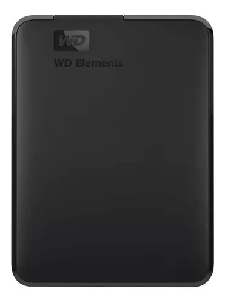
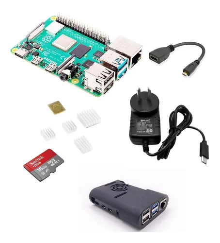
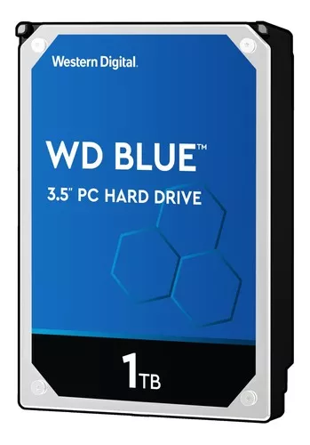
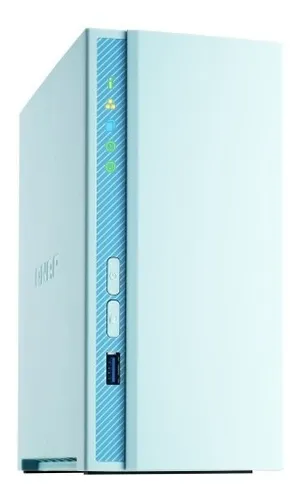

Un servidor NAS es un dispositivo de almacenamiento conectado a la red. Su función es la de hacer copias de seguridad de los archivos que le indiques en la configuración, tanto los de tu computadora personal como los de cualquier otro dispositivo móvil, aunque también tiene muchas otras funcionalidades.
A efectos prácticos la función principal de estos dispositivos es la de actuar como unidad de almacenamiento, haciendo las veces de disco duro externo o permitiéndote crear tu propio almacenamiento en la nube.



